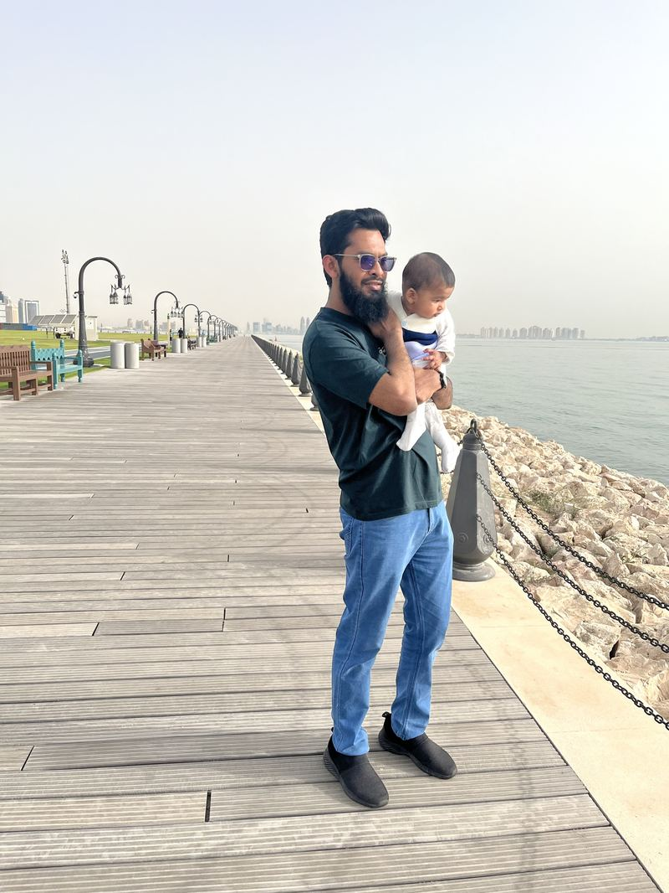

We got to Old Doha Port early enough that the boardwalk was still mostly ours — a few people walking, one or two fishing off the rocks, the water doing that flat, quiet thing it only does before the day gets going. Yahya was awake but not fussy, which for a morning outing counts as a win before anything else happens.
I've noticed I take these mornings more seriously than I used to. Not in a heavy way — just that I actually show up for them now, instead of treating them as something to fit in around everything else. Work, the HND, testing, deadlines — all of that is still there. But it waits fine for an hour by the water.
Yahya spent most of the walk looking past me at the skyline, the boats, anything that moved. He's at the age where the whole world is still new enough to stare at, and there's something in that I want to hold on to noticing myself — the instinct to actually look at things instead of just walking past them.
Most of what I log here is work. This one isn't, and I think that's fine — not everything needs a test case.
We'll go back. It's close, it's quiet in the morning, and Yahya seems to approve of the boats.